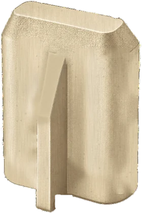
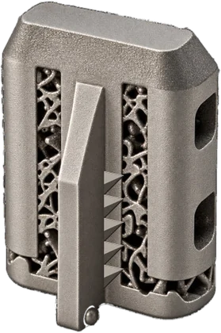
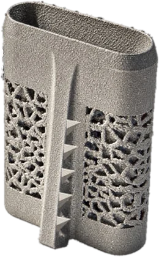

Dr. Beck and VGI Medical
Wellspring Pain Solutions offers ultra minimally invasive SI joint fusion with SiJoin implants, made by VGI Medical and placed through the back. This tab gathers the implants, a research study and VGI Medical’s own pages so you can read before your visit.
The SiJoin implants
Three SiJoin options exist: one made of donor bone and two made of 3D-printed titanium.



Your doctor will go over which option is right for you. Images are not to scale.
The research
A university study used a computer model to compare how SI joint implants hold the joint steady. It is research, not patient results.
Read more from VGI Medical
VGI Medical’s own pages, in the company’s words. They are written for surgeons, so some terms are technical.
Next steps
Have questions? Speak with someone who can answer them.
317-340-0342Call or email with any questions you or your family have about the procedure, your pain diagnosis, recovery or what to expect. We can also connect you with a local patient.
Sources: VGI Medical (vgimedical.com), read Nov. 19, 2026. SiJoin is a registered trademark of VGI Medical. This page is general information and is not medical advice. In an emergency, call 911.